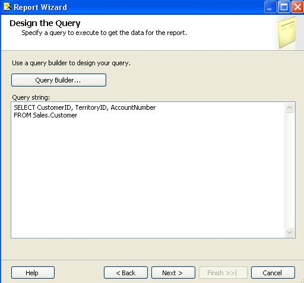

Reporting Service 2008 Developer Guide & Tutorial
Note that, SQL Server 2008 R2 Express version does not support Custom Report Items (CRI). Therefore, our Reporting Service Barcode Libaray Dlls are not available
for this SQL Server version.
With an easy-to-use design purpose, our software doesn't need any activation code or registrion code. And ONBARCODE grants to you to use this evaluation package,
on one computer, for Evaluation purposes only within 30 days. And a red text (watermark) will appear on the generated barcode(s) randomly.
Once you ordered any license of the product, we will email you
OnBarcode.BarcodeGenerator.DotnetSuite.zip production version as soon as possible.
We also provide
Reporting Services 2005 Barcode Generation Guide.
Deploy Controls & Config Environments

Top
Deploy Barcode Controls
-
Open directory "\Program Files\Microsoft Visual Studio 9.0\Common7\IDE\PrivateAssemblies\".
Copy "OnBarcode.Barcode.RS2008CRI.dll" and "OnBarcode.Barcode.RS2008.dll" to the folder.
-
Open directory "\Program Files\Microsoft SQL Server\MSRS10.MSSQLSERVER\Reporting Services\ReportServer\bin\".
Copy "OnBarcode.Barcode.RS2008CRI.dll" to the folder.
Config Environments
-
In file: "\Program Files\Microsoft Visual Studio 9.0\Common7\IDE\PrivateAssemblies\rsreportdesigner.config"
<Configuration>
<Extensions>
...
<ReportItems>
<ReportItem Name="LinearBarcodeControl"
Type="OnBarcode.Barcode.RS2008CRI.LinearReportCRI, OnBarcode.Barcode.RS2008CRI" />
<ReportItem Name="DataMatrixBarcodeControl"
Type="OnBarcode.Barcode.RS2008CRI.DataMatrixReportCRI, OnBarcode.Barcode.RS2008CRI" />
<ReportItem Name="PDF417BarcodeControl"
Type="OnBarcode.Barcode.RS2008CRI.PDF417ReportCRI, OnBarcode.Barcode.RS2008CRI" />
<ReportItem Name="QRCodeBarcodeControl"
Type="OnBarcode.Barcode.RS2008CRI.QRCodeReportCRI, OnBarcode.Barcode.RS2008CRI" />
</ReportItems>
<ReportItemDesigner>
<ReportItem Name="LinearBarcodeControl"
Type="OnBarcode.Barcode.RS2008.LinearReport, OnBarcode.Barcode.RS2008" />
<ReportItem Name="DataMatrixBarcodeControl"
Type="OnBarcode.Barcode.RS2008.DataMatrixReport, OnBarcode.Barcode.RS2008" />
<ReportItem Name="PDF417BarcodeControl"
Type="OnBarcode.Barcode.RS2008.PDF417Report, OnBarcode.Barcode.RS2008" />
<ReportItem Name="QRCodeBarcodeControl"
Type="OnBarcode.Barcode.RS2008.QRCodeReport, OnBarcode.Barcode.RS2008" />
</ReportItemDesigner>
</Extensions>
</Configuration>
-
In file: "\Program Files\Microsoft SQL Server\MSRS10.MSSQLSERVER\Reporting Services\ReportServer\rsreportserver.config"
<Configuration>
<Extensions>
...
<ReportItems>
<ReportItem Name="LinearBarcodeControl"
Type="OnBarcode.Barcode.RS2008CRI.LinearReportCRI, OnBarcode.Barcode.RS2008CRI"/>
<ReportItem Name="DataMatrixBarcodeControl"
Type="OnBarcode.Barcode.RS2008CRI.DataMatrixReportCRI, OnBarcode.Barcode.RS2008CRI"/>
<ReportItem Name="PDF417BarcodeControl"
Type="OnBarcode.Barcode.RS2008CRI.PDF417ReportCRI, OnBarcode.Barcode.RS2008CRI"/>
<ReportItem Name="QRCodeBarcodeControl"
Type="OnBarcode.Barcode.RS2008CRI.QRCodeReportCRI, OnBarcode.Barcode.RS2008CRI"/>
</ReportItems>
</Extensions>
</Configuration>
-
In file: "\Program Files\Microsoft SQL Server\MSRS10.MSSQLSERVER\Reporting Services\ReportServer\rsssrvpolicy.config"
<configuration>
<mscorlib>
<security>
<policy>
<PolicyLevel version="1">
...
<!-- This is the first CodeGroup in the config file -->
<CodeGroup
class="FirstMatchCodeGroup"
version="1"
PermissionSetName="Nothing">
<IMembershipCondition
class="AllMembershipCondition"
version="1" />
<!-- Add Following Text just follow the first CodeGroup. -->
<CodeGroup
class="UnionCodeGroup"
version="1"
PermissionSetName="FullTrust"
Description="This code group grants OnBarcode.Barcode.RS2008CRI.dll Full Trust permission. ">
<IMembershipCondition
class="UrlMembershipCondition"
version="1"
Url="C:\Program Files\Microsoft SQL Server\MSRS10.MSSQLSERVER\Reporting Services\
ReportServer\bin\OnBarcode.Barcode.RS2008CRI.dll" />
</CodeGroup>
...
</CodeGroup>
</PolicyLevel>
</policy>
</security>
</mscorlib>
</configuration>
How to Start?
Top
Below steps explain how to generate barcodes in Reporting Service 2008 reports in Visual Studio 2008 and later version.
-
Start Visual Studio 2008, and create a new project. In "New Project" dialog,
- Select "Business Intelligence Projects" as project type
- Select "Report Server Project Wizard" as template
- Use the default name "Report Project1" as report name
-
Click "Next" in Report Wizard dialog.
-
Select Data Source. We are using "AdventureWorks" as our data source. Click Next.
-
Create Query string. Copy "SELECT CustomerID, TerritoryID, AccountNumber FROM Sales.Customer" to the Query string input box.

-
Select "Tabular" as report type.
-
Use the default settings in "Design the Table" Dialog, and click Next.
-
Use the default settings in "Choose the Table Style" Dialog, and click Next.
-
Use the default settings in "Choose the Deployment Location" Dialog, and click Next.
-
Name the report "Barcode in Reporting Service", Click Finish.
-
Now you need add OnBarcode Reporting Service Barcode CRI to your Report Item Toolbox.
- Right click "Report Items"
- Click "Choose Items..."
- Select tab ".NET Framework Components"
- Click "Browse..." button
- Select "OnBarcode.Barcode.RS2008.dll" from "\Program Files\Microsoft Visual Studio 9.0\Common7\IDE\PrivateAssemblies\"
- Check the 4 barcode components for reporting service "DataMatrixBarcodeControl", "LinearBarcodeControl", "PDF417BarcodeControl", "QRCodeBarcodeControl".
- Click OK
- Now you can find 4 barcode components in your Report Item Toolbox.
-
Add a new column to your report to display barcodes. In this example, we will use Code128 to encode Customer Account number.
- Right click the table in the report, select "Insert Column to the Right"
- Keyin "Barcode" as column header
- Drag "LinearBarcodeControl" to the Column "Barcode"
- Select linear barcode, go to Property window and change property "BarcodeData" to "=Fields!AccountNumber.Value"
-
Click "Preview" tab to view the generated report.
Barcode Setting in Reporting Service Barcode Generator
Top
Barcode for Reporting Service - Bar Code Types Generation